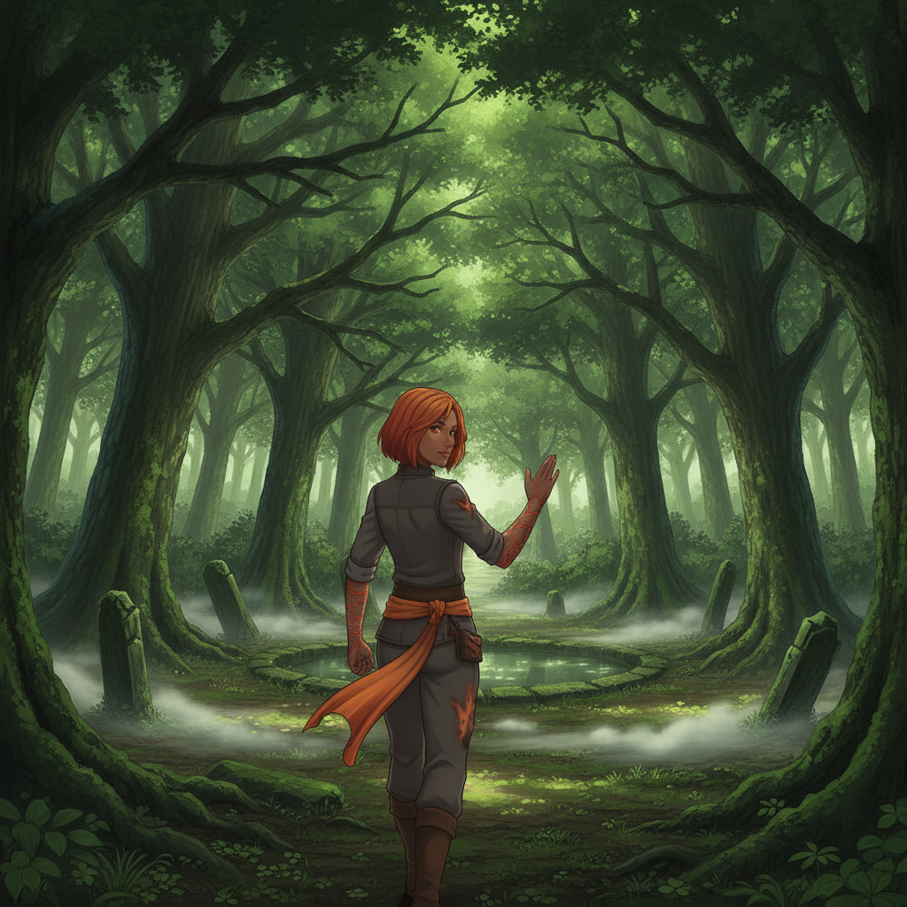
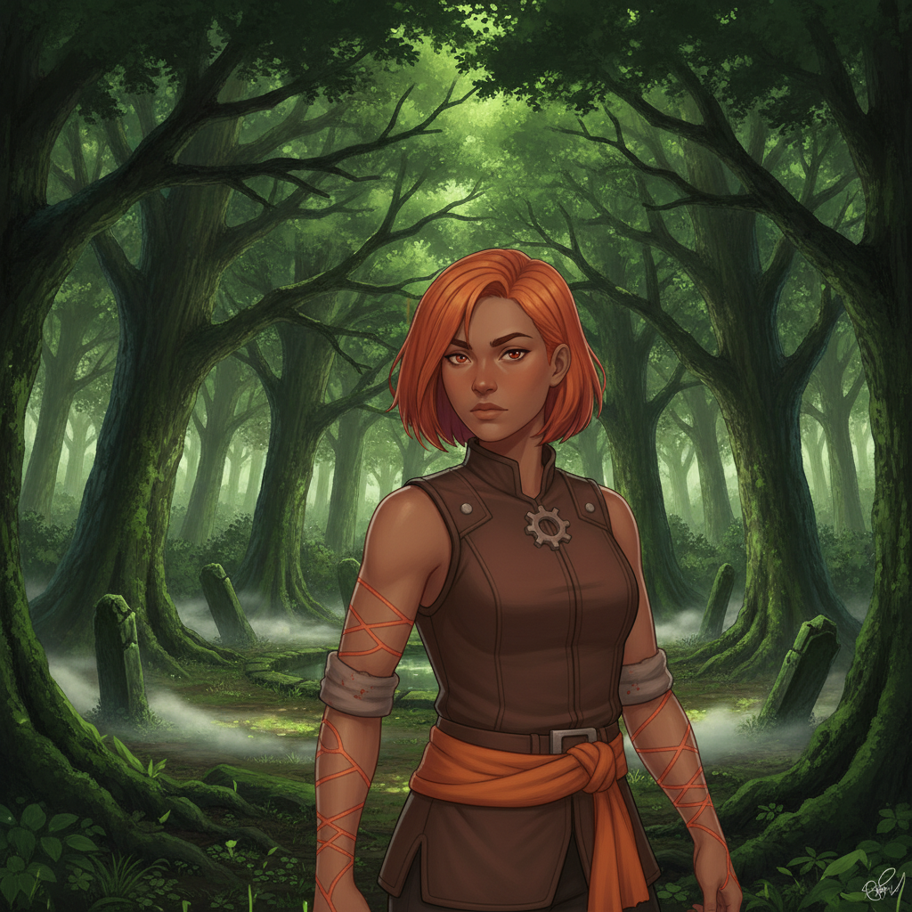

The College Woods, beyond the wards, offer a wild, unpoliced sanctuary. Dappled light filters through the canopy, and the Weave feels closer to the surface here, untamed.
Ember leads me to a mist-pooled clearing.

Ember Kellan“The College teaches metering. I will teach you to spend. To burn. To live without counting the cost.”